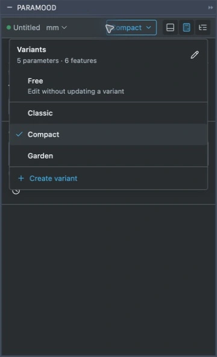
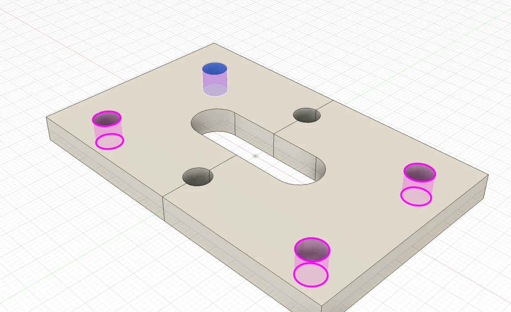
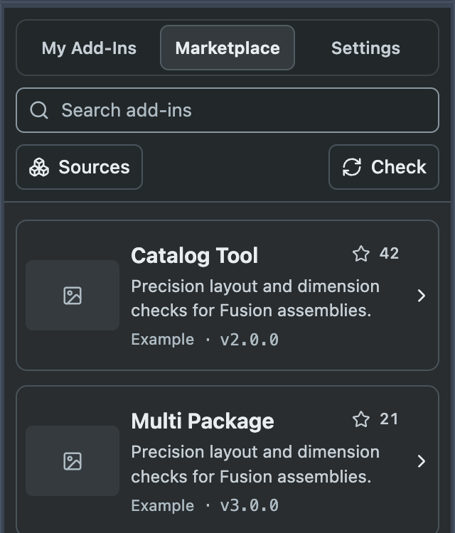
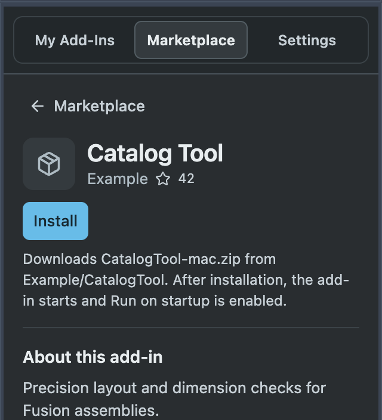
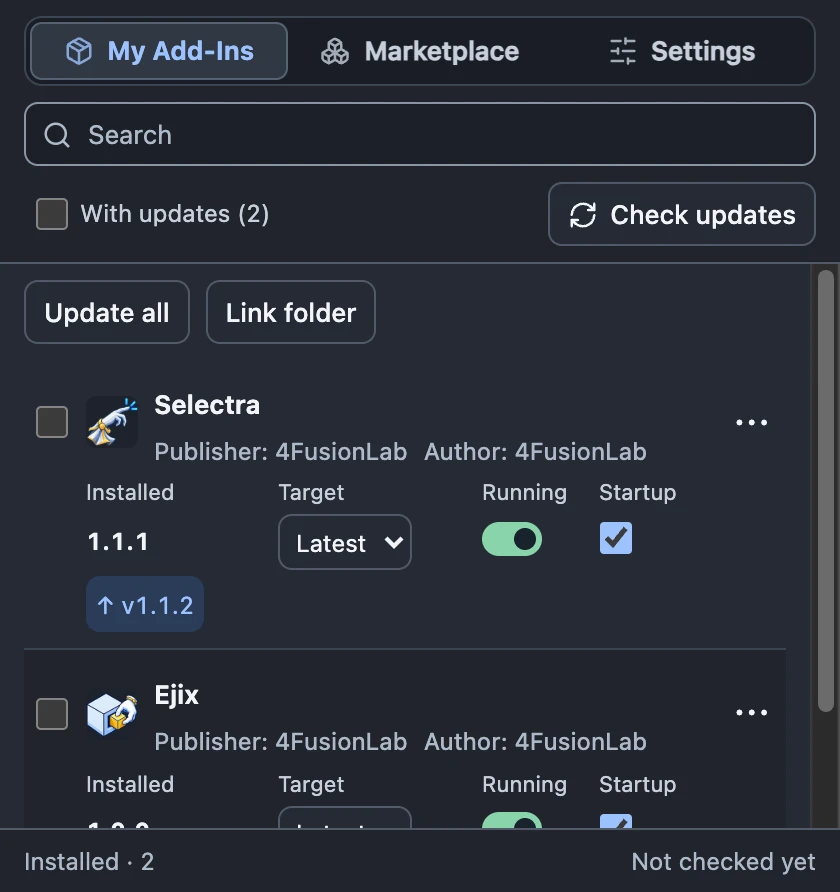

Paramood
Keep several sizes of a design in one Fusion file. Save parameter formulas and supported feature states in a variant table, then switch between sizes.
Browse the community catalog while your design is open. Install an add-in, compare its installed version with the author’s latest release, and apply the updates you choose.
For an enclosure that comes in two sizes, save both variants in Paramood and switch between them in one file. Lay out a vent with Perfora by choosing a face and setting the hole spacing.
For a test print, select the finished parts and send them to OrcaSlicer with ExporTo. You’ll find all three add-ins in the default catalog.
4FusionLab / 8 add-ins

Keep several sizes of a design in one Fusion file. Save parameter formulas and supported feature states in a variant table, then switch between sizes.

Create a ventilation grille on a panel face. Set the spacing, web thickness and edge clearance, then compare honeycomb and Voronoi patterns.

Select the wall of one hole to find similar faces throughout the model. For contour work, follow connected edges across bodies to select a closed loop.
Extract a solid from a closed profile at a depth you specify. Here the cut reaches halfway into the cube, leaving a blind pocket and a matching core.
Pin reference dimensions to model geometry and choose which to display. Distances, angles and diameters update as the model changes.
Right-click selected bodies to open a 3MF in OrcaSlicer, send an STL to Blender or save a STEP file for another CAD system. Export bodies together to preserve their relative positions.
Find a filament color by manufacturer and product line. Add the appearance to your design and apply it to selected geometry.
Press the same physical key to run an assigned Fusion letter shortcut while typing in Russian.
Inside the Fusion palette

Search by name. Open a result to read the author’s description.

Choose Install on the add-in page. If a release has several packages, choose the one for your system.

Select Update all to see the proposed versions together. Review the list and confirm once.
You can also manage startup settings in Fusion’s Scripts and Add-Ins dialog. Open Fusion help
Community catalog
The Store checks these GitHub accounts for add-in releases. Add another author in the palette to include their tools in your catalog.
Paste a GitHub profile, organization or repository URL into Sources. Any of these connects the entire account. Browse its add-ins, screenshots and READMEs in the palette.
Choose a stable release. The palette marks packages for your operating system and checks the digest, version and add-in ID where available. You can open prereleases on GitHub.
By default, the Store checks at Fusion startup and every 30 minutes, even with the palette closed. Change the interval in Settings. When you apply updates, you can see the result for each add-in.
Updating a Store-managed add-in backs up its previous folder. Unlinking a repository leaves its files in place. To recover an archived add-in, copy its folder to a permanent location and link it again in Fusion.
You can browse, install and update public add-ins while signed out. Signing in uses your account’s GitHub API quota.
Open Settings to check for Store updates, export diagnostic logs or replay the first-run guide. To report a problem with an add-in or source, open its entry in the palette.
CommunityStore folder
containing
CommunityStore.manifest and
CommunityStore.py.
Attach your add-in’s ZIP to a GitHub release so people can install it from the palette. The guide shows how to structure the ZIP, prepare the manifest and write the README users see in the catalog.
Publisher guideTo reach everyone using the default catalog, submit your GitHub profile or organization and a link to one published release.
Submit a catalog source